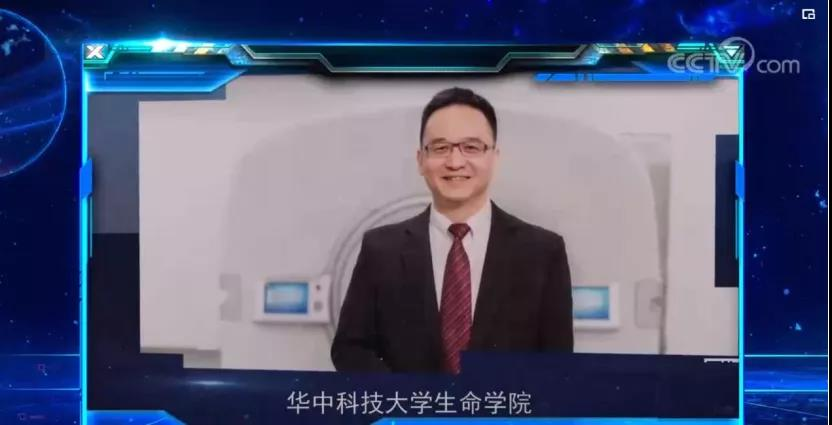
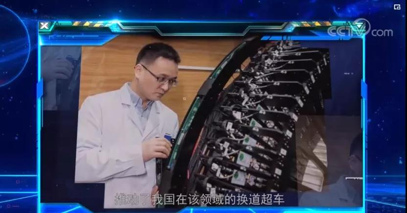
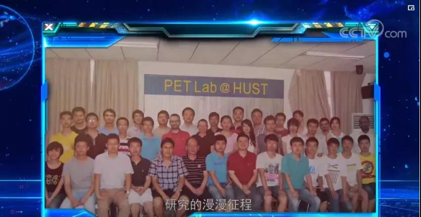
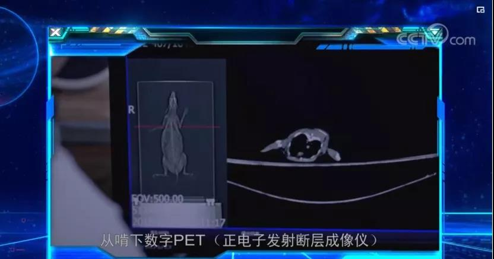
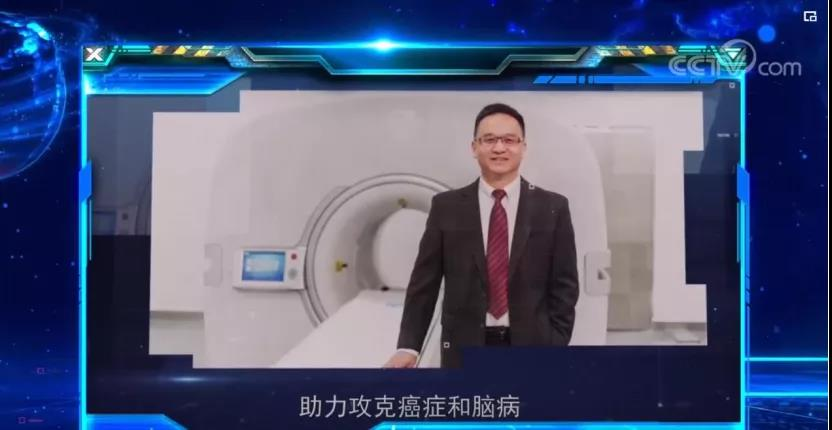
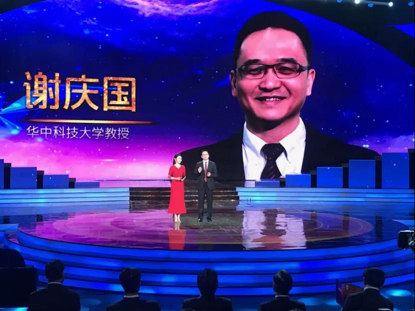

Digital PET Inventor Xie Qingguo Featured in CCTV’s ‘Promoting the Spirit of Scientists’ Series
At the beginning of the New Year, CCTV.com aired a short film titled 'Series of Figures Promoting the Spirit of Scientists'. Professor Xie Qingguo from the School of Life Science and Technology at Huazhong University of Science and Technology and the Wuhan National Laboratory for Optoelectronics made an appearance in the film, representing one of the exemplary figures embodying the spirit of scientists in the new era.
Short Film Introduction:Xie Qingguoleading his team to work diligently over19 years, completing the development of digital PET from its principle invention to detector fabricationFrom the development of clinical whole-body PET devices to obtaining regulatory approval, it has achieved international originality and leadership, breakingthe technological monopoly of international giants in the high-end medical equipment sector, promoting China's leapfrogging in this field.

In 2001, starting from a makeshift laboratory converted from an iron shed under extremely rudimentary conditions, Xie Qingguo led his 'student soldiers' to embark on the long journey of digital PET research. In 2010, the team developed the world's first whole-body animal digital PET with sub-millimeter resolution. In 2014, Xie Qingguo decided to develop a clinical whole-body human digital PET. For an underdog team aiming to enter the high-end medical equipment industry, which is characterized by high entry barriers and significant investment, the challenges were unimaginable. From tackling the 'hard bones' of theoretical innovation to producing tangible large-scale equipment, behind it all lies the countless efforts and sweat of the team, as well as the trust and support from national science and technology departments akin to venture capitalists.


In May 2019, the world's first clinical whole-body digital PET/CT was approved for national medical device registration and officially entered the market. This means that cancers and other major diseases can be detected earlier, more accurately, and faster, ushering in an era of high-definition, precise quantitative imaging for PET.

The short film series 'Promoting Scientists' Spirit Series Characters' on CCTV mainly highlights the spirit of scientific workers who adhere to the development path of 'science is the foundation of national prosperity, innovation is the soul of ethnic progress', striving for truth and practicality while scaling new heights. It commends their achievements in a batch of 'outstanding and notable' scientific and technological results.
It is understood that the scientists featured in this series were also selected as 'Top Ten Innovative Figures of CCTV Science Awards 2019'. The award represents seven aspects of the spirit of scientists in the new era: innovation, responsibility, sentiment, challenge, commitment, leadership, and future. Xie Qingguo embodies the 'leadership' aspect of the scientist's spirit. In Xie Qingguo's view, 'leadership' is an honor but also a responsibility. As a brand-new technological route, digital PET must achieve widespread application, iterative optimization, and benefit the people to truly succeed, which is also the embodiment of the responsibility of 'leadership'.
